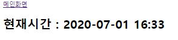
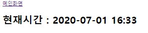

느낀점
(백엔드)
- 불필요한 부븐은 제거를 하자(특히 안쓰는 생성자)
- 회사의 코드 포멧 기준이 있을 수 있으니 tab 기준을 4크기로 설정하자!
- 즉 회사에서 제공하는 코드 포멧터에 맞출 필요가 있음
- 코드포멧터 팁
- 어노테이션 설정을 잘하자
(프론트엔드)
- html lang속정 잘쓰자 나중에 http 통신시 문제가 생길수 있을수도?
- css는 밖으로 빼자
- alt를 쓸때 의미에 맞춰서 쓰자
- 시멘틱 테그를 잘쓰자 time이나 address같은 태그